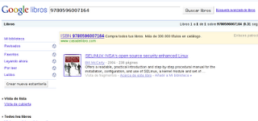

Lector de código de barras hecho en python para Android
Posted on dom 13 junio 2010 in Tutorial Python • 2 min read
Este post se basa en el artículo en inglés de Matt Cutts donde crea el lector de código de barras en 6 líneas de código, el enlace del blog lo tienen acá.
A continuación tienen el código necesario para buscar en internet un código de barras capturado por medio de la camara del celular:
```python
Importar modulo android
import android
Instanciar el objeto Android
droid = android.Android()
Llama al lector de código de barras del celular, se captura el código ISBN
y se abre un navegador en google books para buscar ese código
droid.startActivity('android.intent.action.VIEW', "http://books.google.com?q=%d" %int(droid.scanBarcode()[1]['extras']['SCAN_RESULT']))
```
Eliminando los comentarios al final el script contiene sólo 3 líneas de código para realizar la busqueda en internet libros por medio del código de barras capturado desde la camara.
Pero lo mejor será desglosar la última línea de código en varias líneas para una explicación detallada de lo que hace la última línea:
```python
Importar modulo android
import android
Instanciar el objeto Android
droid = android.Android()
Escanear el codigo de barra por medio de la camara del celular, code guarda una lista
code = droid.scanBarcode()
Capturar el isbn del diccionario que contiene la lista
La lista tiene 3 elementos y el número 1 contiene un diccionario.
El diccionario contiene el formato del código de barras y el isbn.
Luego ese código se convierte de utf8 a int
isbn = int(code[1]['extras']['SCAN_RESULT'])
Crea el url completo para realizar la busqueda del isbn
url = "http://books.google.com?q=%d" %isbn
Inicia la busqueda del isbn en google abriendo un navegador
droid.startActivity('android.intent.action.VIEW', url) ```
Al escanear el código de barra desde el celular se abre una ventana del navegador para realizar una busqueda en books.google.com del isbn capturado.
La siguiente figura muestra el resultado de la busqueda.

===
¡Haz tu donativo! Si te gustó el artículo puedes realizar un donativo con Bitcoin (BTC) usando la billetera digital de tu preferencia a la siguiente dirección: 17MtNybhdkA9GV3UNS6BTwPcuhjXoPrSzV
O Escaneando el código QR desde billetera: